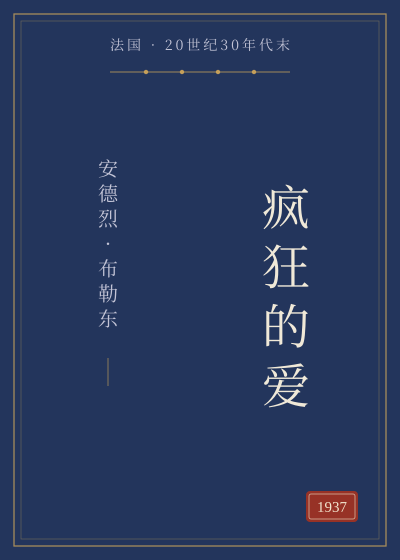
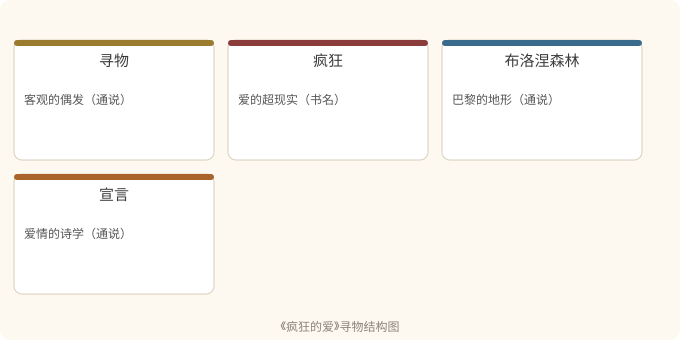

疯狂的爱
一、基本信息
| 作者 | 安德烈·布勒东 |
|---|---|
| 成书/出版 | 1937年（Britannica B344：L'Amour fou (1937; Mad Love)——中译名待核） Andre Breton — Encyclopaedia Britannica（百科全书） |
| 国别/地区 | 法国 |
| 时代 | 近代 · 20世纪30年代末 |
| 体裁 | 散文集 |
| 语言 | 法语 |

《疯狂的爱》寻物结构图（主题·结构图）
二、创作背景
Britannica（B344）：L'Amour fou——'Mad Love'——作品列表。
Britannica（B344）：布勒东——超现实主义'chief promoter and one of the founders'。
题材（通说待核）：与神秘女子寻物之旅——'疯狂的爱'的对象化。
三、内容脉络
（通说待核）布洛涅森林的寻物与'客观偶发'（objet à fonctionnement symbolique——通说待核）。
（通说待核）超现实主义爱情的宣言。
四、主要人物表
| 人物 | 身份 | 说明 |
|---|---|---|
| '我' | 诗人 | （B344 语境） |
五、主题与艺术特点
- '疯狂的爱'：超现实的爱情观（书名语境——通说待核）。
- '客观偶发'物的理论（通说待核）。
- 自动写作的叙事化（B344 交叉）。
六、影响与评论
- Britannica：L'Amour fou (1937)（B344）。
Andre Breton — Encyclopaedia Britannica（百科全书） - Britannica：超现实主义运动定位（B344 作者级）。
Andre Breton — Encyclopaedia Britannica（百科全书）
七、阅读建议
难点
- ' objet '理论术语。
- 巴黎的地形学。
- 《疯狂的爱》中译本（人民文学等——通说待核）。
- 法文原版。
布勒东散文篇；与《娜佳》《磁场》对读。
八、待核实
- ' objet à fonctionnement symbolique '术语核对（通说）。
- 1937年出版细节待核。
- 寻物之旅细节待核。